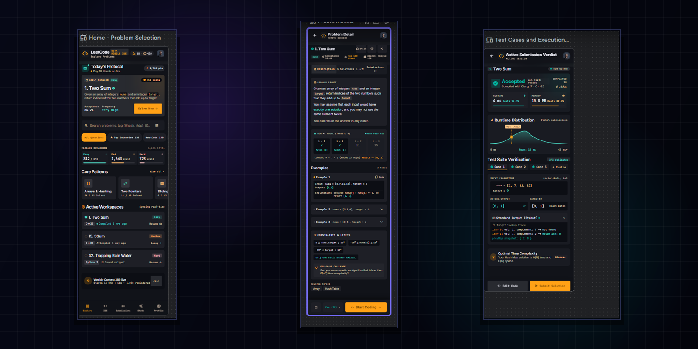
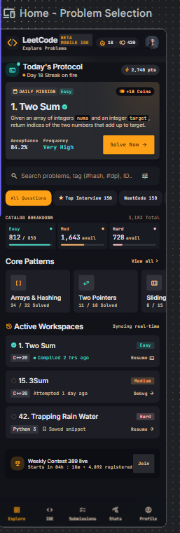
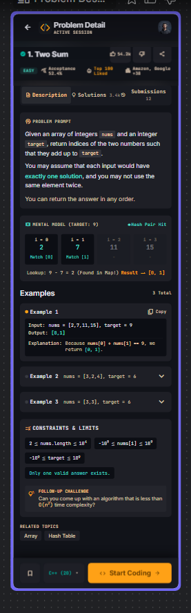
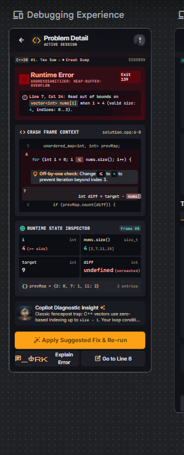
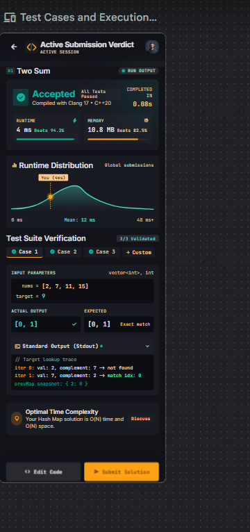
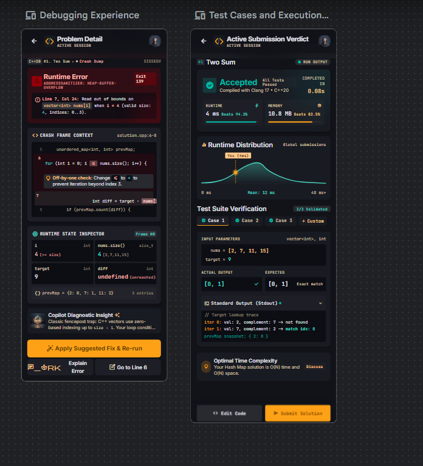

An independent UX redesign concept focused on improving the mobile coding experience of the LeetCode Android application, with particular attention to code editing, programming symbol accessibility, debugging and test-case visibility.
Explore the core redesigned interfaces: Problem Discovery, Visual Mental Model, and In-Memory Debugging.

To transform the LeetCode mobile experience from a passive problem-viewing reader into a high-productivity mobile IDE. The design empowers developers to read structured algorithm prompts, write and edit code without keyboard friction, inspect runtime state variables during crashes, and validate test cases with immediate feedback while on the move.
Why writing code on mobile feels broken, and the physiological and technical limitations developers encounter on handheld touchscreens.
Algorithmic problem-solving requires developers to simultaneously review problem statements, constraints, code logic, and test cases. When the on-screen soft keyboard pops up, it consumes more than 50% of the display, reducing the editor to a cramped 4-line viewport that induces disorientation.
Standard mobile virtual keyboards are engineered for natural language, not computer programming. Key syntax symbols ({ } [ ] ; -> :: != == && ||) are buried beneath multiple modal sub-keyboards, forcing 2 to 3 tedious keyboard switches per line of code.
Touchscreens lack the sub-pixel accuracy of physical mice. Placing cursors between tokens, selecting nested expressions, or maintaining proper indentation is notoriously frustrating. Without accessible undo/redo buttons, accidental keystrokes often destroy drafted solutions.
When a solution crashes with a memory violation (like AddressSanitizer heap-buffer-overflow or SIGSEGV), existing mobile apps dump raw, unformatted compiler logs. Developers cannot see in-memory variable values, off-by-one boundary indicators, or line context without switching to a PC.
Analyzing developer feedback across app store reviews, developer interviews, and observing real-world mobile coding sessions.
A systematic qualitative review of developer feedback on the official LeetCode Android application and competing mobile coding platforms revealed consistent user frustration regarding editor ergonomics:
[Editable Placeholder: Additional Play Store rating distribution metrics and longitudinal sentiment tracking data can be inserted here as research expands.]
Conducted semi-structured inquiry sessions with active competitive programmers and engineering students who regularly solve Data Structures & Algorithms problems.
[Editable Placeholder: Insert qualitative interview transcripts, cohort demographics, and user quotes for upcoming participant cohorts here.]
Five focused pillars designed to eliminate friction, optimize screen space, and empower high-speed mobile coding.
Introduce a persistent, high-speed programming symbol toolbar anchored directly above the virtual keyboard, providing single-tap access to language-specific operators and punctuation.
{ } ( ) [ ]; -> :: == !=Optimize typography for mobile displays with high-contrast syntax highlighting, customizable monospace sizing, structured indentation guides, and collapsible boilerplate blocks.
Position prominent Undo and Redo touch controls within prime thumb reach on the primary action bar, ensuring safety against accidental gesture deletions.
Provide a unified Test Suite Verification panel that allows developers to toggle test cases, view input parameters, and compare Actual vs Expected outputs side-by-side.
Transform cryptic runtime crashes into contextual debugging cards with inline crash frame context, live in-memory variable inspector, and AI-assisted Copilot diagnostic advice.
Iterating from user flow mapping and ergonomic wireframes to interactive prototyping in Google Stitch.
Mapped the end-to-end journey of an engineer on the go: from viewing the Daily Mission protocol and selecting an active problem workspace, to deconstructing logic via a visual mental model, writing syntax with quick-symbol assistance, and resolving runtime errors in real-time.
Analyzed touch-target reachability on modern 6.1" to 6.7" smartphone displays. Placed primary actions ("Start Coding", "Submit Solution", "Apply Fix") and symbol toggles strictly within the natural thumb sweep zone, while dedicating the upper screen to code inspection and syntax hierarchy.
Explored how to convey complex algorithms without overwhelming mobile users. Designed an interactive "Mental Model" widget showing hash table lookups dynamically (e.g., target 9: value 2, complement 7 found in map). For debugging, replaced cryptic terminal logs with an interactive state inspector table showing variable values at the exact crash frame.
Leveraged Google Stitch to craft pixel-precise high-fidelity mobile frames, test micro-interactions, simulate compile-run cycles, and validate contrast ratios against dark IDE aesthetics.
Actual high-resolution redesign screens showcasing the reimagined LeetCode mobile experience. Click any screen to view in full resolution.

Features Today's Protocol, Daily Mission "1. Two Sum", Catalog Breakdown by difficulty, Core Pattern roadmaps, and synced Active Workspaces.

Structured problem statement with an interactive algorithmic mental model visualizer (target 9 hash lookup), collapsible test cases, constraints, and bottom "Start Coding" CTA.

AddressSanitizer heap-buffer-overflow crash dump with line context, off-by-one check, live in-memory variable inspector (i=4, nums.size()=4), and Copilot diagnostic insights.

Accepted verdict with runtime distribution curve (4ms beats 94.2%), memory distribution, multi-case test suite comparison (Actual vs Expected), and standard output stream.
Side-by-side view comparing the Debugging Experience and Active Submission Verdict frames on the canvas.

Experience the responsive touch states, problem explorer, algorithmic mental model, and interactive debugging inspector live inside the Google Stitch prototype.
Hosted on Google Stitch • Project ID: 5484652042681104642
Evaluating task success, cognitive load, and thumb ergonomics with real developers across key problem-solving workflows.
Usability evaluations were designed around four standardized mobile coding tasks administered on Android smartphones:
[Editable Placeholder: Task completion rate percentages, System Usability Scale (SUS) scores, and time-on-task metrics will be recorded upon completion of full multi-cohort usability rounds.]
[Editable Placeholder: Document direct participant quotes regarding symbol toolbar ergonomics, mental model clarity, and keyboard responsiveness.]
[Editable Placeholder: Document specific design adjustments made in response to testing, e.g., customizable symbol bar order, haptic feedback on undo, or landscape split view for tablet devices.]
Core insights gained from designing specialized technical developer workflows for constrained touch devices.
Designing technical tools for mobile is not about shrinking desktop IDEs; it requires rethinking data entry from the ground up. Quick-access symbol rows and accessible undo controls transform touch typing into an enjoyable experience.
Abstract data structures (hash tables, pointers, sliding windows) are notoriously hard to reason through on small screens. Providing interactive visual mental models bridges the gap between problem comprehension and syntactical implementation.
Developers do not want raw terminal stack traces on phones. Surfacing in-memory variable state (e.g. i=4 vs nums.size()=4) and contextual one-tap fixes turns frustrating debugging sessions into instant learning moments.
[Editable Area: Add personal reflections, project retrospectives, future tablet/foldable design iterations, or feedback received from recruiters and design mentors.]